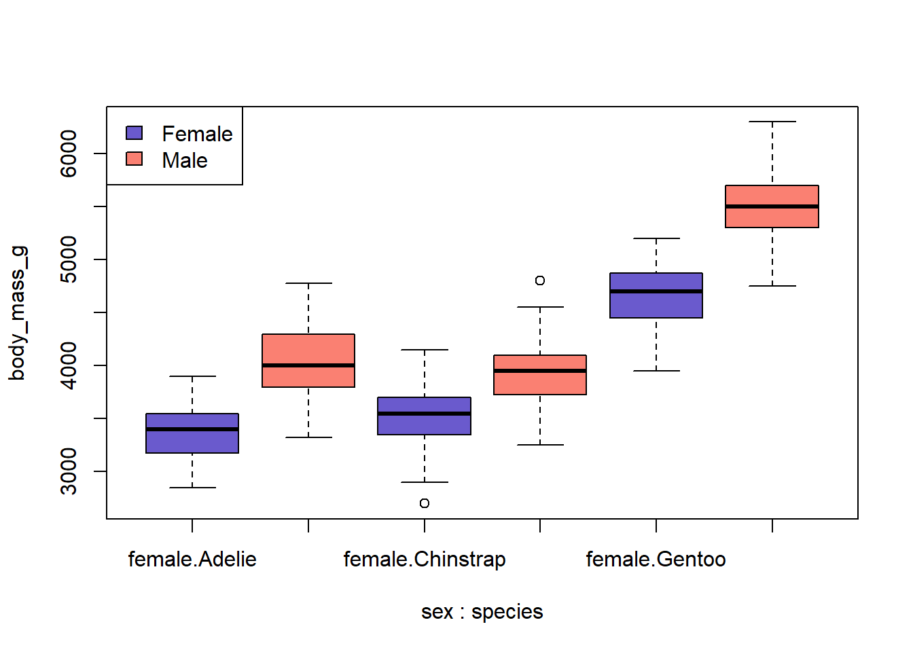

I don’t really understand what Echo: Fenced does so I print this twice with/without it
```{r}print("this is fenced")```
[1] "this is fenced"
print("this is NOT fenced")
[1] "this is NOT fenced"
Testing out Quarto In Rstudio, click on “New” and then “Quarto document”. Give it a name, and choose an output format (the format that you will view the rendered document in). Add a title, insert a code chunk, and write some prose. Example: print out the first six rows of the palmerpenguins dataset.
# A tibble: 6 × 8
species island bill_length_mm bill_depth_mm flipper_length_mm body_mass_g
<fct> <fct> <dbl> <dbl> <int> <int>
1 Adelie Torgersen 39.1 18.7 181 3750
2 Adelie Torgersen 39.5 17.4 186 3800
3 Adelie Torgersen 40.3 18 195 3250
4 Adelie Torgersen NA NA NA NA
5 Adelie Torgersen 36.7 19.3 193 3450
6 Adelie Torgersen 39.3 20.6 190 3650
# ℹ 2 more variables: sex <fct>, year <int>
Experiment with changing the yaml header options, click on Render again and see what changes. Example, if you are using the html output format, try changing the theme. Experiment with changing one of the code chunks in the document, Re-render and see what changes.
Next steps:
Vectors and matrices
The following code creates a matrix with some integers:
The Palmer penguins data are available in the package palmerpenguins. Install the package and inspect the data called palmerpenguins. You can read about the data in the help file:
head(palmerpenguins::penguins)
# A tibble: 6 × 8
species island bill_length_mm bill_depth_mm flipper_length_mm body_mass_g
<fct> <fct> <dbl> <dbl> <int> <int>
1 Adelie Torgersen 39.1 18.7 181 3750
2 Adelie Torgersen 39.5 17.4 186 3800
3 Adelie Torgersen 40.3 18 195 3250
4 Adelie Torgersen NA NA NA NA
5 Adelie Torgersen 36.7 19.3 193 3450
6 Adelie Torgersen 39.3 20.6 190 3650
# ℹ 2 more variables: sex <fct>, year <int>
Let’s do some basic analyses on this dataset.
massfit <-lm(body_mass_g ~ sex * species, data = penguins)summary(massfit)
Call:
lm(formula = body_mass_g ~ sex * species, data = penguins)
Residuals:
Min 1Q Median 3Q Max
-827 -214 11 206 861
Coefficients:
Estimate Std. Error t value Pr(>|t|)
(Intercept) 3368.8 36.2 93.03 <2e-16 ***
sexmale 674.7 51.2 13.17 <2e-16 ***
speciesChinstrap 158.4 64.2 2.47 0.0142 *
speciesGentoo 1310.9 54.4 24.09 <2e-16 ***
sexmale:speciesChinstrap -262.9 90.8 -2.89 0.0041 **
sexmale:speciesGentoo 130.4 76.4 1.71 0.0889 .
---
Signif. codes: 0 '***' 0.001 '**' 0.01 '*' 0.05 '.' 0.1 ' ' 1
Residual standard error: 309 on 327 degrees of freedom
(11 observations deleted due to missingness)
Multiple R-squared: 0.855, Adjusted R-squared: 0.852
F-statistic: 384 on 5 and 327 DF, p-value: <2e-16
: female
: Adelie
Min. 1st Qu. Median Mean 3rd Qu. Max.
2850 3175 3400 3369 3550 3900
------------------------------------------------------------
: male
: Adelie
Min. 1st Qu. Median Mean 3rd Qu. Max.
3325 3800 4000 4043 4300 4775
------------------------------------------------------------
: female
: Chinstrap
Min. 1st Qu. Median Mean 3rd Qu. Max.
2700 3362 3550 3527 3694 4150
------------------------------------------------------------
: male
: Chinstrap
Min. 1st Qu. Median Mean 3rd Qu. Max.
3250 3731 3950 3939 4100 4800
------------------------------------------------------------
: female
: Gentoo
Min. 1st Qu. Median Mean 3rd Qu. Max.
3950 4462 4700 4680 4875 5200
------------------------------------------------------------
: male
: Gentoo
Min. 1st Qu. Median Mean 3rd Qu. Max.
4750 5300 5500 5485 5700 6300
boxplot(body_mass_g ~ sex * species, data = penguins, col =rep(c("slateblue", "salmon"), 3))legend("topleft", fill =c("slateblue", "salmon"), legend =c("Female", "Male"))

Inspect the massfit object. What type of data structure is it, and what does it contain?
massfit is a list, it contains 14 objects, these objects come from the linear model specified by lm model
You are planning a publication about the association/interaction between species and sex on body mass. The paper will include descriptive statistics, statistical inference, and some figures. You will likely present the results at a conference or in a lab meeting.
What are some different approaches to save the results?
Discuss the pros and cons of your suggested approaches. Stop and think How do you plan to use the statistical output, immediately and in the future? Thinking about this question helps guide what and how I will store output from an analysis.
Will I read the data into another program before putting it into tables for my paper? Is it a result of a computation that takes a long time to run that will be used in subsequent analyses? What about figures?
I generally use ggsave to save graphics, preferably as .svg, .pdf or .jpg files for other objects they are saved with saveRDS if I need to work on them again, if I need to present it, I generally save the summary as a data.frame with writexlAlternatively we could just save the code to make it - which works untill the code to generate data takes too long to run, I did a hobby project with sampling dice rolls and since some of the dice rolls required to basically roll Yathzee (so chances are 1 / (6^6) = 2.14^{-5} ) so I needed to roll basically a million dice (using a loop and sample(1:6)), rerunning the code took 30 minutes, so I saved the dice rolls using saveRDS()